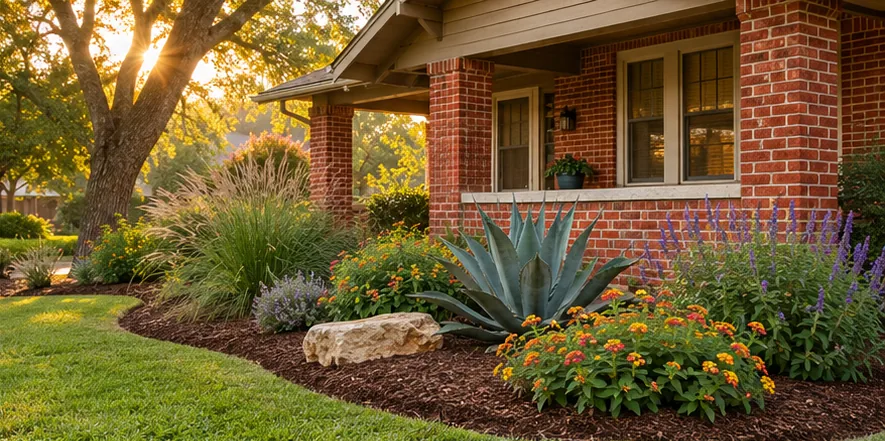

Weekly or biweekly mowing
Ask about scheduled mowing with edging, trimming and blowing.
Outdoor services · Ennis, TX
Weekly or biweekly cuts, seasonal cleanups and flower-bed work. Tell Lawn Kings what you need and ask for a free estimate.

What we do
Ask about scheduled mowing with edging, trimming and blowing.
Get help when leaves and seasonal yard debris start to pile up.
Ask about flower-bed work or share photos of the trees that need attention.
The business also lists gutter cleaning and junk removal.
The business lists weekly and biweekly cuts. Ask about scheduling for your address when you request an estimate.
Ennis, Texas
Share your neighborhood, what you need done and any photos that explain the job.